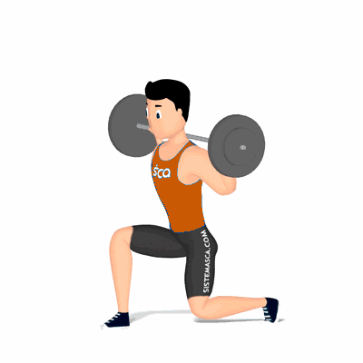

Afundo

Um dos exercícios mais populares para fortalecimento e hipertrofia dos músculos da coxa, com enfoque aos músculos reto femoral, vasto lateral e vasto medial.
Ficha Técnica
Tipo: Musculação
Grupo Muscular: Perna
Aparelho: Nenhum
Músculos: Nenhum
Como realizar
- Apoie uma barra na região do trapézio, manter a coluna reta e abdome contraído;
- Dê um passo longo à frente com a perna direita, essa é a posição inicial do exercício;
- Desça o corpo flexionando o joelho em um ângulo de 90 graus até a coxa ficar em paralelo ao solo;
- O tronco deverá descer em linha reta e o joelho não deve ultrapassar a linha dos pés;
- O joelho esquerdo descer até o chão, acompanhando o tronco;
- Com a força das coxas, empurre o corpo para cima retornando à posição inicial;
- Repita os movimentos. Ao termino das repetições, troque a posição das pernas.
 RC STORE
RC STORE